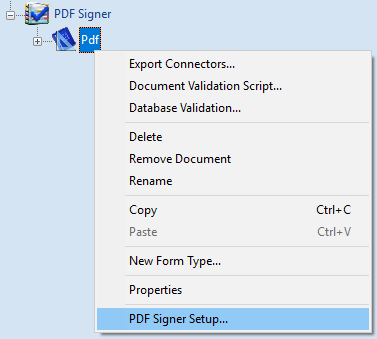
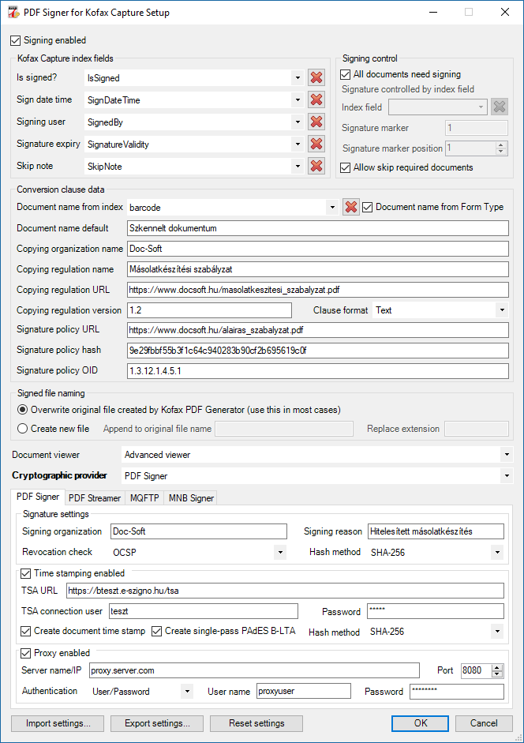
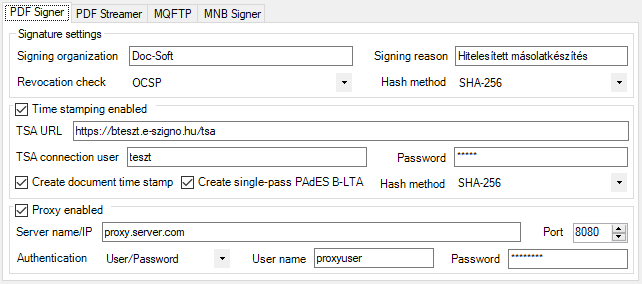
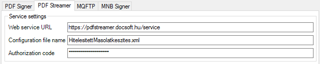
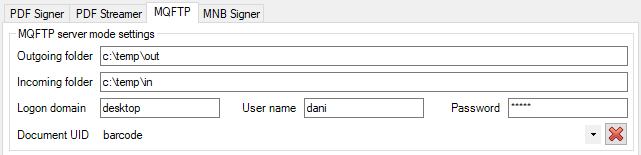
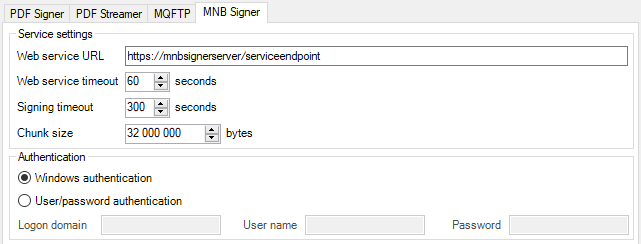

Dokumentumosztály hitelesítési beállításai
Válasszuk ki azt a dokumentumosztályt, amelynek beállításait módosítani szeretnék. Minden dokumentumosztályhoz eltérő beállítások adhatók meg, így biztosítva az esetelegesen eltérő jogszabályi követelményeknek való megfelelést. A dokumentumosztály kiválasztása után kattintsunk rajta jobb egérgombbal.

Dokumentumosztály helyzetérzékeny menüje
A megjelenő menü alján válasszuk ki a PDF Signer Setup... menüpontot, mire megjelenik a dokumentum-osztályhoz tartozó beállítóablak.
A párbeszédablak felépítése

PDF Signer for Tungsten Capture beállítóablaka
Az ablakban megjelenített szövegek nyelve a Tungsten Capture Administration modul felületének nyelvéhez igazodik.
Az ablak az alábbi részekből áll:
Aláírás bekapcsolva jelölőnégyzet
Amennyiben a jelölőnégyzet be van kapcsolva, úgy a dokumentumosztályba szkennelt iratok a PDF Signer for Tungsten Capture modulban – további beállításoktól függően – hitelesítésre kerülnek.
Tungsten Capture indexmezők (Tungsten Capture index fields)
Ezekben a legördülő listákban választható ki, hogy a dokumentum-hitelesítéssel kapcsolatos meta-adatokat mely indexmezőkből vegye, illetve mely indexmezőkbe töltse a PDF Signer for Tungsten Capture.
- Aláírva? (Is signed?): ebbe az indexmezőbe fog bekerülni annak a ténye, hogy egy adott dokumentum átesett-e hitelesítésen, vagy sem. A hitelesített iratok esetén a mező értéke "1", a nem hitelesített iratok esetén a mező értéke "0" vagy üres.
- Aláírás időpontja (Sign date time): ebbe az indexmezőbe fog bekerülni a hitelesítés dátuma és időpontja XML DateTime formában.
Ez a mező nem az időbélyegzőben szereplő időpontot tartalmazza, hanem azt az időpillanatot, amikor az aláírt állomány a Tungsten Capture rendszerben letárolásra került. Az időpont a kliens munkaállomásról származó, a géphez beállított időzóna szerinti idő.
- Aláíró felhasználó (Signing user): kliens oldali aláírás esetén az aláírást követően az itt kiválasztott indexmezőbe kerül az aláíró tanúsítványban szereplő tulajdonos neve. Szerver oldali aláírás esetén (PDF Streamer vagy MQFTP kriptográfiai modulok esetén) a PDF Signer for Tungsten Capture modulba bejelentkezett felhasználó AD-ból származó polgári neve.
- Aláírás lejárta (Signature expiry): ebbe az indexmezőbe fog bekerülni a hitelesített dokumentum hitelességének lejárati időpontja. A PDF Signer for Tungsten Capture modul komplex algoritmus alapján számolja ki a lejárati dátumot, figyelembe véve az aláírt dokumentumokon szereplő összes aláírást és időbélyeget. Az így megállapított időpont az az időpont, ami előtt a dokumentumot ismét időbélyegezni szükséges, ha a hitelességét továbbra is meg kívánjuk őrizni. A dátum és időpont XML DateTime formában kerül tárolásra.
- Hitelesítés kihagyásának oka (Skip note): amennyiben az aláírás-vezérlésnél engedélyezett a hitelesítés kihagyása, úgy a kihagyás oka ebbe az indexmezőbe fog bekerülni.
Indexmező hozzárendelésének törlése: ezzel az ikonnal lehet törölni az indexmező-hozzárendeléseket.
Aláírás-vezérlés (Signing control)
Ezen a panelen állíthatjuk be, hogy a dokumentum-osztályhoz tartozó mely iratokat kell aláírással ellátni.
- Minden dokumentumot alá kell írni (All documents need signing): ha a jelölőnégyzet be van jelölve, akkor a dokumentumosztályhoz tartozó összes szkennelt iratot alá kell írni, függetlenül attól, hogy a vonalkódként megadott mezőben milyen aláírás-vezérlő karakterek találhatók.
- Vonalkód (Bar code): annak az indexmezőnek a neve, amelyben a dokumentumot egyedileg azonosító adat található. Amennyiben egy adott dokumentum-osztályban nem kell az összes iratot aláírni, akkor ebben az indexmezőben kell megadni azt a vezérlőkaraktert, ami mutatja, hogy a szkennelt irt aláírandó-e, vagy sem.
- Aláírás-jelölő (Signature marker): az a Vonalkód indexmezőben fix pozícióban lévő karakter, aminek jelenléte esetén a dokumentumot kötelező aláírni.
- Aláírás-jelölő pozíciója (Signature marker position): az a Vonalkód indexmezőben balról számolt fix pozíció, ahol az aláírás jelölő karakter található.
- Hitelesítés kihagyásának engedélyezése (Allow skip required documents): ha a jelölőnégyzet be van jelölve, akkor a dokumentumosztályhoz tartozó dokumentumok hitelesítése kihagyható és a nem hiteles dokumentum fog továbbküldésre kerülni.
Másolatkészítési záradék adatai (Conversion clause data)
Ezen a panelen lehet megadni a hitelesítési másolatkészítés záradékába kerülő fix meta adatokat.
- Dokumentum neve indexmezőből (Document name from index): itt lehet kiválasztani azt az indexmezőt, amelyből a dokumentum megnevezését kell betölteni. A mezőt üresen hagyva automatikusan a következő adat alapján próbálja előállítani a rendszer a dokumentum nevét.
- Dokumentum neve Form Type alapján (Document name from Form Type): amennyiben be van jelölve, és a Dokumentum neve indexmezőből (Document name from index) indexmező nincs megadva, akkor a dokumentum megnevezése a Tungsten Capture-ben beállított dokumentumtípus (Form Type) lesz.
- Dokumentum nevének alapértéke (Document name default): ha nincs kiválasztva indexmező, amiből a dokumentum nevét veszi a rendszer, és a Dokumentum neve Form Type alapján (Document name from Form Type) jelölőnégyzet sincs bekapcsolva, akkor az itt megadott alapérték lesz az összes aláírt dokumentum megnevezése. Ha ezt az értéket is üresen hagyjuk, akkor a dokumentum nevét a vonalkód alapján generálja a PDF Signer for Tungsten Capture modul.
- Másolatkészítő szervezet neve (Copying organization name): a másolatkészítést végző szervezet megnevezése.
- Másolatkészítési szabályzat neve (Copying regulation name): a másolatkészítési szabályzat megnevezése.
- Másolatkészítési szabályzat URL (Copying regulation URL): a másolatkészítési szabályzat elérhetősége. Az URL-nek Internet felől elérhető link-nek kell lennie, hogy a dokumentumot bárki megtekinthesse, aki a hiteles másolatokkal kapcsolatba kerül.
- Másolatkészítési szabályzat verziója (Copying regulation version): a dokumentumokra vonatkozó másolatkészítési szabályzat verziószáma.
-
Záradék formátuma (Clause format): a hitelesítési másolatkészítési záradék formátuma. Lehetséges értékek: XML, vagy Text. Az XML formátumú záradék angol nyelvű tag-eket, a Text formátumú magyar nyelvű megnevezéseket tartalmaz.
- Aláírási szabályzat URL (Signature policy URL): az aláírási szabályzat elérhetősége. Az URL-nek Internet felől elérhető link-nek kell lennie, hogy a dokumentumot bárki megtekinthesse, aki a hiteles másolatokkal kapcsolatba kerül.
- Aláírási szabályzat hash (Signature policy hash): az aláírási szabályzat SHA-1 lenyomata.
- Aláírási szabályzat OID (Signature policy OID): az aláírási szabályzat OID-je, a http://www.oid-info.com/ oldalon szereplő nyilvántartás alapján.
Aláírt fájl elnevezése (Signed file naming)
Ezen a panelen adható meg, hogy az aláírt és az eredeti fájlok hogyan kerüljenek tárolásra.
- A Kofax PDF Generator által készített fájl felülírása (Overwrite original file created by Kofax PDF Generator): az opció választásakor az eredeti (aláíratlan) PDF fájl felülíródik az aláírt fájllal. Az eredeti fájl ugyanabban a mappában kerül mentésre _original utótaggal a fájl nevében. Ezt az eljárást használva nem kell az Export Connector-okat módosítani.
- Új fájl készítése (Create new file): ezzel az opcióval a Kofax PDF Generator által készített eredeti fájl változatlan marad a hitelesítést követően, mert az aláírt fájl új néven kerül mentésre. Az opció csak akkor alkalmazható, ha egyedi Export Connector-okat használunk, amiben az új fájlnevet le tudjuk kezelni.
- Fájlnév utótag (Append to original file name): ha az Új fájl készítése opció be van kapcsolva, akkor a fájlnévhez az itt megadott utótagot fűzi a modul (pl. "_signed").
- Új kiterjesztés (Replace extension): amennyiben az aláírt fájl formátuma nem PDF (hanem pl. XAdES), akkor lehetőség van az aláírt fájl kiterjesztésének megváltoztatására.
Megtekintő-választó lista (Document viewer)
Ebből a listából lehet kiválasztani, hogy mely komponenssel tekintjük meg a dokumentumokat. Az alábbi komponensek állnak rendelkezésre:
- Simple viewer: csak dokumentum-megtekintésre alkalmas, nem támogatja az oldalműveleteket (forgatás és törlés), valamint miniatűrnézetek (thumbnails) sem állnak rendelkezésre. Gyorsabb és kevesebb memóriát igényel, mint az Advanced viewer.
- Advanced viewer: a dokumentumok megtekintésén felül támogatja az oldalműveleteket (forgatás és törlés), valamint miniatűrnézetek (thumbnails) is elérhetők. Lassabb és több memóriát igényel, mint a Simple viewer.
Kriptográfiai szolgáltató-választó lista (Cryptographic provider)
Ebből a listából lehet kiválasztani, hogy mely kriptográfiai szolgáltatóval írjuk alá a dokumentumokat. Minden kriptográfiai szolgáltatónak más beállításai vannak. Az alábbi kriptográfiai szolgáltatók állnak rendelkezésre:
Kriptográfiai szolgáltatók beállításai
Az alábbi fejezet az egyes kriptográfiai szolgáltatók beállításait mutatja be.
PDF Signer

PDF Signer beépített kriptográfiai moduljának beállítási felülete
Aláírási beállítások (Signature settings)
- Aláíró szervezet (Signing organization): az aláíráson Adobe Reader-ben megjelenítendő név. Eltérhet az aláíró tanúsítványban szereplő névtől.
- Aláírás oka (Signing reason): az aláírás oka, amely Adobe Reader-ben is megjelenik .
- Visszavonás ellenőrzés (Revocation check): az aláíró tanúsítvány visszavonásának ellenőrzési módja. Lehetséges értékek:
- Nincs ellenőrzés (None): az aláíró tanúsítványt nem ellenőrzi a rendszer külső forrásból, csak a helyi cache-ből (nem javasolt, csak ha később hozzárendeljük a aláíráshoz az online beszerzett visszavonási információkat).
- CRL: ellenőrzés visszavonási listával.
- OCSP: ellenőrzés OCSP-vel. Ha a tanúsítvány nem ellenőrizhető OCSP-vel (pl. mert a hitelesítés-szolgáltató nem nyújtja a szolgáltatást), akkor az aláírási művelet megszakad.
- OCSP vagy CRL, ha OCSP nem elérhető (OCSP (CRL fallback)): ellenőrzés OCSP-vel. Ha a tanúsítvány nem ellenőrizhető OCSP-vel, akkor CRL-el kerül ellenőrzésre.
- Hash algoritmus (Hash method): az aláíráshoz használt, az aláírandó dokumentumból képzett lenyomat (hash) képzésének algoritmusa.
Időbélyegzés beállításai (Time stamping...)
- Időbélyegzés bekapcsolva (Time stamping enabled): a hitelesített dokumentumon az aláírás mellett időbélyeget is elhelyez a rendszer.
- TSA URL: az időbélyeg-szolgáltató URL-je.
- TSA felhasználónév (TSA connection user): az időbélyeg-szolgáltatóhoz történő kapcsolódáshoz használt felhasználónév. Ha a belépéshez nem kell felhasználónév, akkor a mezőt hagyjuk üresen.
- Jelszó (Password): az időbélyeg-szolgáltatóhoz történő kapcsolódáshoz használt felhasználónévhez tartozó jelszó. Ha a belépéshez nem kell felhasználónév, vagy nem tartozik hozzá jelszó, akkor a mezőt hagyjuk üresen.
- Dokumentumszintű időbélyeg készítése (Create document time stamp): az aláírt PDF dokumentumra nem aláírásszintű, hanem dokumentumszintű időbélyeget helyez el a rendszer.
- Egymenetes PAdES B-LTA készítése (Create single-pass PAdES B-LTA): a PDF dokumentumra egy lépésben PAdES B-LTA szabvány szerinti aláírás készül, amely a legmagasabb szintű aláírás: beágyazva tartalmazza az összes visszavonási információt és ezeket dokumentumszintű időbélyeggel védi. Amennyiben ez az opció be van kapcsolva, akkor a visszavonás ellenőrzést OCSP-re kell állítani és a dokumentumszintű időbélyeg készítése opciót be kell kapcsolni.
Figyelem! A PAdES B-LTA aláírások dokumentumonként két időbélyeget követelnek meg, ami az időbélyeg szolgáltató terheltségétől és az internet kapcsolat sebességétől függően pár dokumentumonként másodperccel lassítja a hitelesítési folyamatot. Az időbélyegzés költsége fájlonként kétszeres lesz!
Proxy szerver beállításai (Proxy)
- Proxy használat bekapcsolva (Proxy enabled): a külső hálózattal történő kommunikáció proxy szerveren keresztül történik. A beállítás befolyásolja az időbélyeg lekéréseket, a CRL letöltéseket és az OCSP válaszok beszerzését.
- Szerver név vagy IP (Server name/IP): a proxy szerver neve vagy IP-je.
- Port: a proxy szerverhez történő kapcsolódáshoz használt port.
- Azonosítási eljárás típusa (Authentication): a proxy szerverre történő bejelentkezéshez szükséges azonosítás típusa. Lehetséges eljárások: nincs azonosítás (No authentication), felhasználónévvel és jelszóval történő azonosítás (User/Password), Digest autentikálás, NTLM autentikálás.
- Proxy felhasználónév (Proxy user name): a proxy szerverre történő bejelentkezéshez szükséges felhasználónév.
- Proxy jelszó (Password): a proxy szerverre történő bejelentkezéshez szükséges felhasználónévhez tartozó jelszó.
PDF Streamer

PDF Streamer kriptográfiai modul beállítási felülete
Szolgáltatás beállítása (Service settings)
- Szolgáltatás URL-je (Web service URL): a PDF Streamer REST végpont teljes URL-je (pl. https://kiszolgalo:port/api/v1/documents/stream).
- Konfigurációs fájl neve (Configuration file name): a másolatkészítés hitelesítéséhez használt konfigurációs állomány neve.
- Hitelesítési kód (Authorization code): a konfigurációs fájl hoz tartozó hitelesítési kód, amivel a szolgáltatás hívható.
MQFTP

MQFTP beállítási felülete
Szolgáltatás beállítása (MQFTP server mode settings)
- MQFTP kimenő mappa (Outgoing folder): a hitelesítésre váró dokumentumok cserekönyvtára.
- MQFTP bejövő mappa (Incoming folder): a visszatérő, hitelesített dokumentumok cserekönyvtára.
- Felhasználó tartománya (Logon domain): a cserekönyvtárak elérésére jogosult felhasználó tartományának neve.
- Felhasználónév (User name): a cserekönyvtárak elérésére jogosult felhasználó login neve.
- Jelszó (Password): a cserekönyvtárak elérésére jogosult felhasználó jelszava.
- Document UID: a fájlnévképzéshez használt egyedi azonosítót tartalmazó indexmező. Ha nincs megadva, akkor a fájlnév a Tungsten Capture által kiosztott GUID lesz.
MNB Signer

MNB Signer beállítási felülete
Szolgáltatás beállítása (MQFTP server mode settings)
- Szolgáltatás elérhetősége (Web Service URL): az MNB Signer szerveren futó szolgáltatás elérési útvonala.
- Szolgáltatáshívás időtúllépési ideje (Web service timeout): az időtartam (másodpercben), ami alatt a szolgáltatás hívásának be kell fejeződnie.
- Aláírás időtúllépési ideje (Signing timeout): az időtartam (másodpercben), ami alatt a darabolt aláírásnak a szerveren el kell készülnie.
- Darabolt fájl mérete (Chunk size): az a fájlméret (byte-ban), ami felett az aláírandó fájlt darabokban kell küldeni az MNB Signer szerver felé. Az ennél kisebb fájlok egy menetben kerülnek aláírásra, míg a nagyobb fájlok küldése és fogadása az itt beállított méretű darabokban történik.
- Windows azonosítás (Windows authentication): a szolgáltatást igénybe vevő felhasználó azonosítása a kliensre bejelentkezett felhasználó Windows domain adatai alapján történik.
- Felhasználónév+jelszó azonosítás (User/password authentication): a szolgáltatást igénybe vevő felhasználó azonosítása egy fix felhasználónév+jelszó párossal történik.
- Domain név (Domain name): felhasználónév+jelszó párossal történő azonosításkor a fix felhasználó domain neve.
- Felhasználónév (User name): felhasználónév+jelszó párossal történő azonosításkor a fix felhasználó login neve.
- Jelszó (Password): felhasználónév+jelszó párossal történő azonosításkor a fix felhasználó jelszava.
- Document UID: a fájlnévképzéshez használt egyedi azonosítót tartalmazó indexmező. Ha nincs megadva, akkor a fájlnév a Tungsten Capture által kiosztott GUID lesz.
Beállítások importálása/exportálása
- Beállítások importálása (Import settings): a korábban exportált beállításokat lehet betölteni XML fájlból.
- Beállítások exportálása (Export settings): XML fájlba menti a párbeszédablak beállításait.
- Beállítások törlése (Reset settings): alaphelyzetbe állítja a párbeszédablak beállításait.
Copyright © 2025. Doc-Soft Kkt. Minden jog fenntartva.